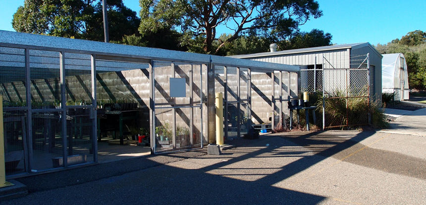
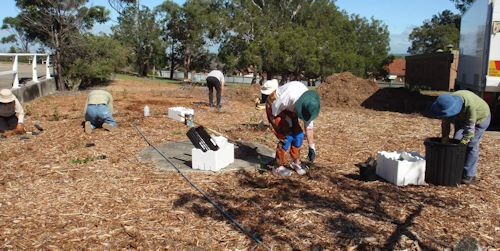
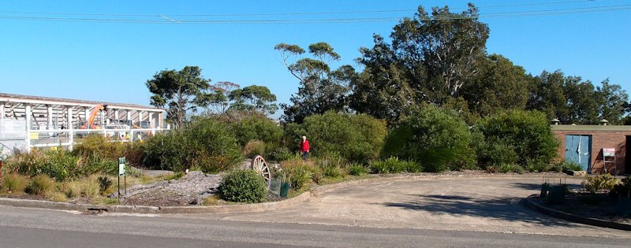
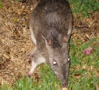

North Head Sanctuary Foundation Nursery

Our Beginnings
North Head Sanctuary Foundation agreed with the Sydney Harbour Federation Trust that a Business Plan for Car-rang-gel (North Head) Native Plant Nursery for propagating North Head species can be used for revegetation in the Sanctuary and nearby areas.
The Nursery Group is a part of the North Head Sanctuary Foundation. We are a group of volunteers, working with the Sydney Harbour Federation Trust to improve the grounds of the North Head Sanctuary. Much of the Sanctuary is Eastern Suburbs Banksia Scrub (ESBS), an endangered ecological community, and we aim to showcase in particular the plants that belong in the ESBS.
The group started by constructing the nursery itself, and began propagating in February 2009.
What We Do
- Collect seeds – we have a licence to collect within the North Head Sanctuary
- Prepare and grow the seed material
- Collect and grow cuttings – some plants are not easy to grow from seed
- Grow the material on until it is ready to be planted out
- Prepare areas for planting and plant in agreed areas
- Reuse our plastic tubes and pots
- Weed as necessary
- Maintain our planted areas and the nursery
- Keep a record of what we do
- Tackle challenges with plants that we find difficult to propagate
- Enjoy working at North Head
- Get great satisfaction when plants that we have grown start to bloom
Where We're Planting
We source material from all over the Sydney Harbour Federation Trust North Head site, and plant in a number of locations. Check them out as you walk around the site:
- Opposite the nursery and semi-circle to the north of that area
- Old Oval – bandicoot habitat
- Beside and in front of the old gym
- North Fort
- Scenic Drive road edge
- Berm along Scenic Drive
- Entrance of North Fort Road (School Of Artillery)
- Area between Crossfit Gym and the Childcare Centre
Progress of planting opposite Building 20 and the nursery






What We're Planting
- Acacia myrtifolia
- Acacia suaveolens
- Acacia terminalis v. t
- Acacia ulicifolia
- Actinotus helianthi
- Actinotus minor
- Allocasuarina distyla
- Astroloma sp
- Baekea sp
- Banksia aemula
- Banksia ericifolia
- Banksia marginata
- Bauera rubioides
- Boronia sp
- Bossiaea heterophylla
- Bossiaea sp
- Callistemon citrinus
- Calytrix tetragona
- Conospermum sp
- Dampiera stricta
- Dianella caerulea
- Dichelachne micrantha
- Dichelachne sp
- Dillwynia retorta
- Epacris longiflora
- Epacris obtusifolia
- Eragrostis brownii
- Eucalyptus camfieldii
- Glycine clandestina
- Gonocarpus teucrioides
- Grevillea buxifolia
- Grevillea speciosa
- Haemodorum planifolium
- Hakea dactyloides
- Hakea gibbosa
- Hakea sericea
- Hardenbergia violaceae
- Helichrysum elatum
- Hibbertia dentata
- Hibbertia diffusa
- Hibbertia fasciculata
- Hibbertia linearis
- Hibbertia scandens
- Isolepis nodosa
- Isopogon anethifolius
- Lambertia formosa
- Lasiopetalum ferrugineum
- Lepidosperma laterale
- Lomandra longifolia
- Olearia tomentosa
- Patersonia sericea
- Persoonia lanceolata
- Petrophile pulchella
- Petrophile sessilis
- Philotheca salsolifolia
- Phyllota phylicoides
- Pimelea linifolia
- Pittosporum revolutum
- Pomax umbellata
- Pultanea sp
- Restionaceae sp
- Ricinocarpus pinifolius
- Themeda australis
- Woollsia pungens
- Xanthorrhoea sp
- Xanthosia pilosa
Providing Protection for our Long-nosed Bandicoots

There is an endangered population of long-nosed bandicoots at North Head. We have been working with the Sydney Harbour Federation Trust and Australian Wildlife Conservancy to develop some “vegetative links” - small areas of dense foliage where the bandicoots can take refuge, forage and hopefully soon start to nest.
Producing these links means that the bandicoots can forage in the mown grass and mulched areas and never be far from a safe haven. Our first area was planted early in 2010. By early 2012 the area was thriving, the protective mesh had long since been removed and the bandicoots were using the area for refuge and to forage.


Invitation to Join Us
We, in the Nursery group together those who help with weeding and planting, enjoy what we are doing and can see that our work is having a positive impact in the surrounding environment.
If you would like to join us, call Jenny Wilson on 0414 735 350 or email jennyw@northheadsanctuaryfoundation.org.au.
We normally meet Tuesday and Friday mornings, but we sometimes have weekend sessions.
There is a small group of people working to produce information for visitors to North Head. Click here to see their preparations for creating plant identification information for Eastern Suburbs Banksia Scrub species.